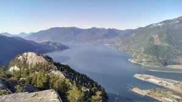
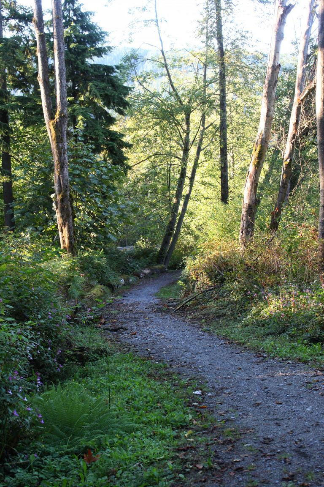
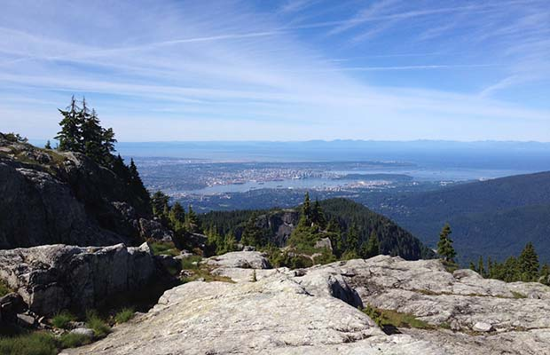

<ion-header>
  <ion-navbar>
    <ion-title>
      About
    </ion-title>
  </ion-navbar>
</ion-header>

<ion-content padding class="card-background-page">

  <ion-card (click)="goToHike(1)">

    
    <div class="card-title">Stawamus Chief</div>
    <div class="card-subtitle">Squamish, BC V0N 1T0, Canada</div>
    <ion-item>
      <span item-start>18 min</span>
      <span item-start>(2.6 km)</span>
      <button ion-button icon-start clear item-end>
        <ion-icon name="navigate"></ion-icon>
        Start
      </button>
    </ion-item>

</ion-card>

<ion-card (click)="goToHike(2)">

  
  <div class="card-title">Burnaby Mountain</div>
  <div class="card-subtitle">University Dr E</div>
  <ion-item>
    <span item-start>3 hours</span>
    <span item-start>(3.2 km)</span>
    <button ion-button icon-start clear item-end>
      <ion-icon name="navigate"></ion-icon>
      Start
    </button>
  </ion-item>

</ion-card>

<ion-card (click)="goToHike(3)">

  
  <div class="card-title">Mount Seymour Provincial Park</div>
  <div class="card-subtitle">Mt Seymour Rd, North Vancouver, BC V7G 1L3, Canada</div>
  <ion-item>
    <span item-start>1.5</span>
    <span item-start>(1.6 km)</span>
    <button ion-button icon-start clear item-end>
      <ion-icon name="navigate"></ion-icon>
      Start
    </button>
  </ion-item>

</ion-card>

    <button ion-button icon-start clear item-end>
      <ion-icon name="navigate"></ion-icon>
      Start
    </button>
  
</ion-content>